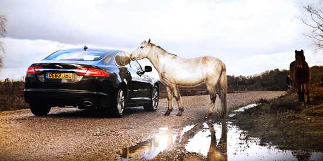
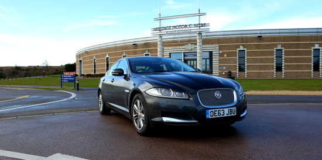
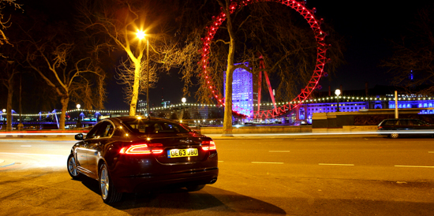
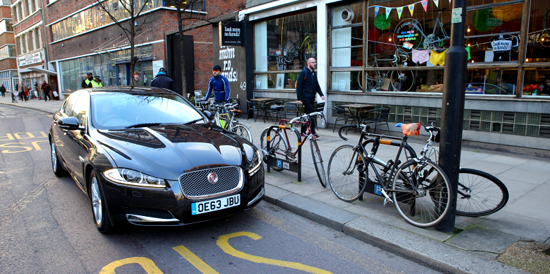
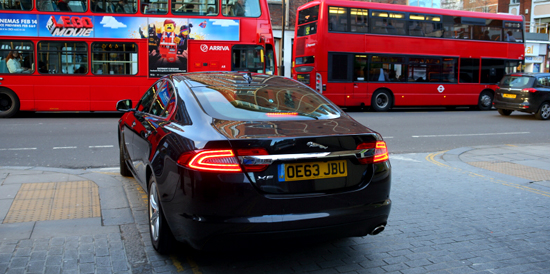

英姿飒爽的捷豹
在马背上体验英伦文化，亲身体验策马奔腾与开着捷豹XF风驰电掣相同的快感。当速度遇到风度，当动力遇到魅力，当性感遇到安全感。无论你来自哪个世界，全新捷豹XF，激发不一样的灵感，创造不一样的生活。
传统汽车中心
传统汽车中心（Heritage Motor Centre）不仅仅是一个汽车博物馆，拥有近300辆复古，经典车型。从全面的归档和图片库，教育和学习方法，专业驾驶事件，俱乐部，集体参观等，以独特的多元化方式展示了来自英国驾驶历史上最具代表性的汽车，如你可以了解到捷豹品牌的精髓、演变和传承。令人印象深刻。

伦敦最吸引的观光点“伦敦眼”
伦敦眼坐落在伦敦泰晤士河畔，是伦敦的地标之一，也是伦敦最吸引游人的观光点之一。它实在是个疯狂的城市创举。就像捷豹XF，将跑车的运动风格与充满创意的设计完美融合。

伦敦的运动时尚文化
伦敦的骑行文化逐渐得到发展，也让这座城市走进了骑车探索的时尚行列。每一辆新款捷豹XF都与众不同，并具有鲜明的运动风格。无论你是骑行在伦敦的街头，还是驾驶着捷豹，或许都会永久性的改变你对这座城市的看法。

捷豹的英式设计
一些标志性的设计真正体现出英式风情。如：黑色出租车、红色巴士、迷你裙，现在还有捷豹全新的设计潮流，这些无不是充分体现英国特色的伟大的工艺及设计成就。